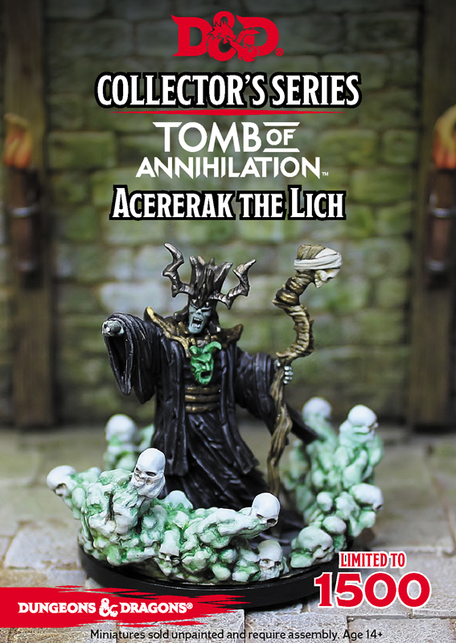

This miniature was a limited run print from Gale Force Nine Games.
Acererak is an archlich who travels between worlds and is known to take sick pleasure in devouring the souls of adventurers, whom he lures into trap-ridden dungeons where they suffer horrible deaths.